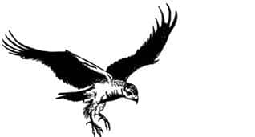
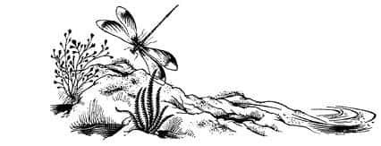
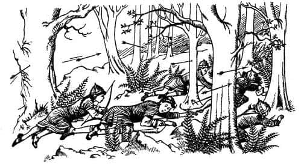
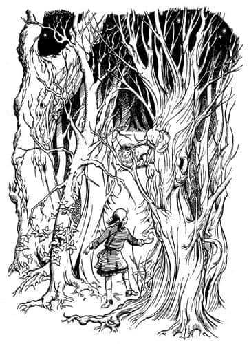

Aslan’ın Dönüşü
Vadi boyunca yürümek göründüğü kadar kolay değildi. Çok geçmeden uçurumun kenarında boy atmış genç köknar ağaçlarıyla karşılaştılar. On dakikaya yakın bir süre, ite kaka ağaçların arasından geçmeye çabaladıktan sonra, bu şekilde yarım mil yol kat etmenin bir saat vakit alacağını hesapladılar. Böylece yeniden geriye dönerek, köknar ormanının çevresinden dolanmaya karar verdiler. Bu karar onları istediklerinden çok daha sağa, uçurumun ve nehrin uzağına düşürmüştü. Yolu tamamen kaybettiklerinden korkmaya başlamışlardı. Kimse zamanı kestiremiyordu. Sıcak bastırmak üzereydi.
Sonunda yeniden vadinin kenarına ulaştılar (başladıkları noktadan yaklaşık bir mil aşağıya). Geldikleri noktadaki kayalıklar oldukça alçaktı. Kayalıkların arasında inişe elverişli birçok yer vardı. Çok geçmeden vadiye inen bir yol keşfettiler ve nehir boyunca yolculuklarına devam ettiler, ancak önce biraz dinlenip kana kana su içmişlerdi. Caspian’la kahvaltı etmek bir yana, kimse akşam yemeğinden bile söz etmiyordu.

Yukarıdan gitmek yerine, Azgın Nehir’i izlemek daha akıllıca gelmişti. Yönlerini şaşırmalarına imkân yoktu. Köknarların arasından çıktıklarından beri, yoldan ayrılmaktan ve ormanda kaybolmaktan korkuyorlardı. Böylesine yaşlı ve sık bir ormanın içinde doğru yolu izlemek gibi bir düşünceniz olamazdı. Her an önünüze geçit vermeyen böğürtlenler, devrilmiş ağaçlar, bataklıklar ve sık çalılıklar çıkabilirdi. Bununla beraber Azgın Nehir vadisi de, öyle gezinti yapılacak, hoş bir yer değildi. Demek istediğim, acelesi olan insanlar için hoş bir yer olmadığı. Bir çayla sona eren bir piknik için çok hoş olabilirdi. Bu türden bir olay için arzulayabileceğiniz her şeye sahipti – gürül gürül akan çağlayanlar, koyu kehribar renkli havuzcuklar, yosunlu kayalar, kıyıda ayak bileklerinize kadar erişen yosun örtüsü, her türden eğreltiotları, mücevhere benzeyen ejderha böcekleri – bazen de tepenizde uçan bir şahin, hatta bir keresinde (Peter ve Yaygaracı öyle sanıyordu) bir kartal bile görmüşlerdi. Ancak çocuklar ve Cüce’nin bir an önce görmek istediği şey kuşkusuz Büyük Nehir, Beruna ve Aslan’ın Kümbeti’ne giden yoldu.

İlerledikçe nehrin yatağı derinleşti. Yolculukları, yürüyüşten çok dağcılık antrenmanına dönüştü. Hatta bazı yerlerde, dibinde nehrin öfkeyle gürlediği korkunç, karanlık ve derin yarıkların bulunduğu kaygan kayaları aşmak zorunda kaldılar.
Sol taraftaki kayalıkları, bir geçit ya da tırmanabilecekleri bir yer bulma umuduyla dikkatle incelediklerinden emin olabilirsiniz. Ancak kayalıklar hiç değişmiyordu. Bu onları delirtiyordu, çünkü vadinin o yamacında bir geçit bulduklarında, küçük bir tırmanışla, kısa zamanda Caspian’ın karargâhına varabileceklerini biliyorlardı.
Oğlanlar ve Cüce, artık bir ateş yakıp ayı etini pişirme zamanının geldiğini düşünüyorlardı. Susan bunu istemiyordu. Dediği gibi, o sadece “yola devam edip bir an önce bu vahşi ormanların dışına çıkmak” istiyordu. Lucy herhangi bir şey düşünemeyecek kadar yorgun düşmüştü. Zaten etrafta toplayabilecekleri kuru odun olmadığından, kimin ne düşündüğü o kadar da önemli değildi. Oğlanlar çiğ etin söylendiği kadar iğrenç olup olmadığını merak etmeye başlamışlardı. Yaygaracı, iğrenç olduğu konusunda onları ikna etti.
Kuşkusuz, çocuklar birkaç gün önce İngiltere’de böyle bir yolculuğa kalkışsalar dayanamazlardı. Sanırım daha önce Narnia’nın onları nasıl değiştirdiğini anlatmıştım. Lucy bile artık, deyiş yerindeyse, yatılı okula giden küçük bir kızdan ziyade, Narnia Kraliçesi Lucy’ye benziyordu.
“Sonunda” dedi Susan.
“Hey, hurra!” dedi Peter.
Nehir yatağı az önce bir kıvrım yapmış, her yer apaçık ortaya çıkmıştı. Önlerinde, kendileriyle ufuk arasında geniş, gümüş bir kurdele gibi uzanan Büyük Nehir’i görebiliyorlardı. Bir zamanlar Beruna Sığlıkları denilen, ancak şimdi üstünden uzun ve çok kemerli bir köprü geçen sığ yere dikkatle baktılar. Köprünün öbür ucunda küçük bir şehir vardı.
“Vay be” dedi Edmund. “Beruna Savaşı’na tam da şehrin olduğu yerde girmiştik!”
Bu onları çok keyiflendirdi. Yüzlerce yıl önce muhteşem bir zafer kazanarak koca bir krallığı kurtardığınız yere baksanız, siz de ister istemez güçlü hissedersiniz kendinizi. Çok geçmeden Peter ve Edmund ayaklarındaki ağrıları, zincir zırhların ağırlığını unutup savaş üstüne konuşmaya dalmışlardı. Konu Cüce’nin de ilgisini çekmişti.
Şimdi hepsi daha hızlı adımlarla yürümeye başlamışlardı. Sol taraflarında hâlâ dik kayalıklar olmasına rağmen, sağda büyük bir düzlük vardı. Yürümek şimdi kolaylaşmıştı. Az ötede boğaz bir vadiye dönüştü. Artık çağlayanlar yoktu. Yeniden sık bir ormana girdiler.
Sonra aniden, bir vınnn sesiyle beraber ağaçkakanın ağacı galalarken çıkardığı sese benzeyen bir ses geldi. Yaygaracı, “Yatın!” diye bağırıp kendini çalılıların içine atarken (tesadüfen onun yanında bulunan) Lucy’yi de beraberinde sürükledi. O anda çocuklar aynı buna benzeyen bir sesi (çağlar önce) nerede duyduklarını ve bundan niçin hoşlanmadıklarını düşünüyorlardı. Bir sincaba gözü takılan Peter yukarıya bakarken sesin nereden geldiğini anladı – uzun ve sipsivri bir ok, hemen başının üzerindeki bir dala saplanmıştı. Susan’ı aşağı çekip kendini yere atarken, bir başka ok kulak tırmalayıcı bir sesle omzunun üzerinden geçerek yanı başına saplandı.

“Çabuk! Çabuk! Geri dönün! Sürünün!” dedi Yaygaracı soluk soluğa.
Geriye dönüp çalıların arasından, vızıldayan iğrenç bir sinek bulutunun içinde yokuş yukarı süründüler. Etraflarında oklar vızıldıyordu. Oklardan biri, tiz bir tınlamayla Susan’ın miğferine çarparak yön değiştirdi. Daha hızlı sürünmeye başladılar. Terden sırılsıklam olmuşlardı. Sonra iyice eğilerek koşmaya başladılar. Oğlanlar takılıp düşme kaygısıyla kılıçlarını ellerine almışlardı.
Gerçekten acınacak haldeydiler, doğrudan yokuş yukarı, geldikleri yoldan geriye gidiyorlardı. Canlarını kurtarmak için bile olsa daha fazla koşamayacaklarını hissettiklerinde, bir çağlayanın yanındaki büyük bir kayanın ardında, ıslak yosunların üzerine, yere attılar kendilerini. Yokuş yukarı ne kadar uzun bir mesafe kat ettiklerini gördüklerinde şaşırdılar.
Dikkatle etrafı dinlediler ve peşlerinde kimse olmadığından emin oldular.
“Bu iyi” dedi Yaygaracı derin bir nefes alarak. “Ormanı araştırmıyorlar. Sanırım nöbetçilerdi. Bu da Miraz’ın orada bir ileri karakolu olduğu anlamına geliyor. Şişeler ve şamandıralar! Çok yaklaşmıştık.”
“Sizi bu yoldan getirdiğim için kafamı duvarlara vurmalıyım” dedi Peter.
“Tam tersine, Majesteleri” dedi Cüce. “Öncelikle, Billursu’yu takip etmemizi ilk teklif eden siz değil, soylu kardeşiniz Kral Edmund’du.”
“Korkarım S.K.D. haklı” dedi Edmund. İşler kötü gitmeye başladığından bu yana, yaptığı yanlışı tamamen unutmuştu.
“İkinci olarak” diye devam etti Yaygaracı, “benim önerdiğim yolu izleseydik büyük bir olasılıkla dosdoğru karakolun kucağına düşerdik, en azından oradan kaçmak için aynı dertleri çekerdik. Billursu rotasının en iyi yol olduğunu düşünüyorum.”
“Tanrı’nın bir lütfu” dedi Susan.
“Amma da lütuf!” diye cevapladı onu Edmund.
“Sanırım dosdoğru gidip, tekrar boğazdan yukarı çıkmamız gerekiyor” dedi Lucy.
“Lu, sen bir kahramansın” dedi Peter. “Ben de tam ‘Size söylemiştim’ demeni bekliyordum. Haydi gidelim.”
“Yukarıda ormanın içine girdiğimizde” dedi Yaygaracı, “kim ne derse desin, ateş yakıp yemek pişireceğim. Fakat önce buradan uzaklaşmamız gerekiyor.”
Boğazdan geriye doğru nasıl güçlükle ilerlediklerini anlatmaya gerek yok. Oldukça zor bir işti bu, ama nedense herkes eskisinden neşeliydi. Yemek sözünün harika bir etkisi olmuş, onları canlandırmıştı.
Hava kararmadan önce, başlarına bir sürü dert açan köknar ormanına ulaştılar ve hemen ötesindeki bir çukurlukta kamp kurdular. Odun toplamak can sıkıcıydı. Ama ateş harladığında, evde yaşayan birine hiç de cazip gelmeyecek olan ıslak, yapış yapış ayı eti paketlerini çıkarmaya başladıklarında her şey mükemmel görünüyordu. Cücenin etleri pişirme konusunda parlak fikirleri vardı. Elmaları tek tek (hâlâ birkaç elmaları vardı) ayı etine sardı, sivri bir çomağa geçirdi ve kızarttı. Böylece hamur yerine etle yapılan elmalı kekler pişirdi. Elmanın suyu, etin her tarafına işliyordu, aynı elma soslu domuz rostosu gibi. Diğer hayvanları yiyerek beslenmiş bir ayının eti pek güzel değildir, fakat meyve ve balla beslenen bir ayının eti mükemmeldir. Bu ayı da bu türden bir ayıydı. Gerçekten harika bir yemek olmuştu. Ne yazık ki yemekten sonra ellerini yıkayacak su yoktu. Oldukları yerden kıpırdamayıp, Yaygaracı’nın piposundan çıkan dumanları seyrediyor, yorgun bacaklarını dinlendirerek sohbet ediyorlardı. Ertesi gün Kral Caspian’a ulaşıp Miraz’ı da bir, bilemedin iki gün içinde alt edeceklerini söylüyorlardı. Pek olası görünmüyordu bu, ama onlar böyle düşünüyorlardı.
Birer birer uykuya daldılar. Hepsi de yatar yatmaz uyumuştu.
Lucy, hayal edebileceğiniz en derin uykudan, dünyada en çok sevdiği sesin onu çağırmakta olduğu hissiyle uyandı. Önce babasının sesi sanmıştı, ama öyle görünmüyordu. Sonra Peter’in seslendiğini sandı ama bu da doğru değildi. Kalkmak istemiyordu. İsteksizliği yorgunluktan değildi. Aksine kusursuz bir biçimde dinlenmiş, kemiklerindeki tüm ağrılar kaybolmuştu. İsteksizliği kendini çok mutlu hissetmesinden kaynaklanıyordu. Gökyüzüne, bizimkinden daha büyük olan Narnia ayına ve yıldızlara bakıyordu (kamp yaptıkları yer nispeten açıklık bir yerdi).
“Lucy” diye seslendi birisi. Bu ne babasının ne de Peter’in sesine benziyordu. Korkuyla değil, heyecanla titreyerek kalktı, oturdu. Ay öylesine parlaktı ki, orman daha vahşi görünmesine rağmen, etraf gündüz gibi aydınlıktı. Arkasında köknar ormanı vardı. Sağında, uzaklarda, boğazın öte yakasında sivri kayaların zirveleri, tam önünde çayırlık bir alan, onun ötesinde de, bir ok atımı uzaklıkta ağaçlık bir yer vardı. Lucy oradaki ağaçlara dikkatle baktı.
“Vay be, o ağaçlar hareket ediyor, eminim” dedi kendi kendine. “Dolaşıyorlar.”
Kalktı, ağaçlara doğru yürüdü. Kalbi hızla çarpıyordu. Ağaçlıktan bir gürültü geldiği kesindi. Rüzgârsız bir gece olmasına rağmen, ağaçlar güçlü bir rüzgârda salınıyormuş gibi bir ses çıkıyordu. Ama bilindik bir rüzgâr hışırtısı da değildi bu. Lucy, bir şarkı dinlediği duygusuna kapılmıştı. Bir gece önce ağaçlar onunla konuşmaya çalışmış, ama Lucy anlayamamıştı. Şimdi de şarkıyı anlayamıyordu işte. İnişli çıkışlı bir ses olduğu kesindi, yakına doğru geldikçe dans etme isteği uyandırıyordu. Şimdi ağaçların gerçekten hareket ettiğinden hiç kuşkusu yoktu – sanki bir dans grubu gibi. (“Bana öyle geliyor ki” diye düşündü Lucy, “bu çok özel bir dans.”) Artık neredeyse aralarındaydı.
Gördüğü ilk ağaç, bir ağaçtan çok, gür ve dağınık sakallı, çalı saçlı bir adama benziyordu. Korkmuyordu çünkü daha önce de böyle şeyler görmüştü. Yeniden baktı. Hareket ediyor, ama sonuçta sadece bir ağaç, diye düşündü. Ayakları ya da kökleri olup olmadığı görülmüyordu, çünkü ağaçlar hareket ettiklerinde köklerini dışarı çıkarıp yürümezler. Onların yürüyüşleri, tıpkı bizim suda yürümemize benzer. Baktığı her ağaçta aynı şeyler oldu. Ağaç topluluğu, sanki bir büyü etkisiyle canlanıp sevimli şekillere bürünüyor, sonra bir anda yeniden eski haline dönüyordu. İnsansı bir halleri vardı. Şekil değiştirdiklerinde, dalları ve yaprakları olan insanlara benziyorlardı. Ve alçalıp yükselen o tuhaf hışırtılar, o huzur verici mutlu sesler sürüp gidiyordu.
“Uyanmak üzereler” dedi Lucy. Kendisinin tamamen uyanık olduğunu, duyularının dünyanın en dikkatli insanınkinden daha açık olduğunu biliyordu.
Dans eden çiftlere çarpmamak için oraya buraya sıçrayarak ve müziğe eşlik ederek korkusuzca aralarına girdi. Aslında onlarla değil, başka bir şeyle ilgileniyordu Lucy – ağaçların ötesine geçmeyi istiyordu. O sevgili ses, oradan gelmişti.
Ağaçların oluşturduğu çemberin ortasında boş bir alan vardı. Lucy elleriyle dalları mı aralıyor, yoksa kendisine dokunmak için eğilen o kocaman dansçıların ellerini mi tutuyor, bilemiyordu. Biraz sonra ağaçların yarattığı o hoş gölge ve ışık karmaşasının dışına çıktı.

Etrafında karanlık ağaçların dans ettiği, iyi bir bahçıvanın elinden geçmiş gibi güzel görünen, yuvarlak bir çimenlik gözüne çarptı. Ve sonra – Tanrım bu ne mutluluk! O oradaydı: Ayışığında bembeyaz parlayan, yanına düşmüş kapkara gölgesiyle koca Aslan.
Kuyruğunun kıpırtısı olmasaydı bir aslan heykeli olduğu sanılabilirdi, fakat Lucy bunu hiç düşünmedi. Onun dost olup olmadığını düşünmek için bile duraksamadı. Ona doğru koştu. Bir an bile kaybetse, kalbinin duracağını düşünüyordu. Bundan sonra hatırladığı ilk şey, Aslan’ı öptüğü, kollarının ulaşabildiği kadarıyla boynuna sarıldığı ve yüzünü, Aslan’ın nadide bir ipek gibi parlayan güzel yelesine gömdüğüydü.
“Aslan, Aslan. Sevgili Aslan” diye hıçkırdı Lucy. “Sonunda!”
İri hayvan yana doğru yatınca, Lucy ön ayakları arasında uzanır bir duruma geldi. Aslan eğildi, diliyle Lucy’nin burnuna dokundu. Ilık nefesi Lucy’nin her yanını kaplamıştı. Lucy büyük ve bilge yüze baktı.
“Hoş geldin çocuk” dedi Aslan.
“Aslan” dedi Lucy, “sen büyümüşsün.”
“Sen büyüdüğün için öyle düşünüyorsun küçük” diye cevapladı.
“Sen büyümedin mi?”
“Büyümedim. Yaşına yıllar eklendikçe, benim de yaşlandığımı düşüneceksin.“
Lucy, o an öylesine mutluydu ki konuşmak istemiyordu. Fakat Aslan konuşmaya başladı.
“Lucy” dedi, “burada oyalanmamalıyız. Yapman gereken bir iş var, bugün çok vakit kaybettiniz.”
“Evet, yazık değil mi?” dedi Lucy. “Ben seni gördüm. Onlar bana inanmadılar. Hepsi öylesine—”
Aslan’ın bedeninin derinliklerinde bir yerden, hafif bir kükreme duyulur gibi oldu.
“Özür dilerim” dedi onun huyunu bilen Lucy. “Diğerlerini kötülemeye başlamak istememiştim. Ama benim hatam değildi.”
Aslan Lucy’nin gözlerinin içine baktı.
“Ah, Aslan” dedi Lucy. “Benim hatam olduğunu mu söylemek istiyorsun? Ben nasıl – ben diğerlerini terk edip yanına gelemezdim, nasıl yapabilirdim bunu? Bana öyle bakma – ah şey, sanırım gelebilirdim. Evet, biliyorum, seninle beraber olsaydım yalnız olmayacaktım. Fakat bunun ne yararı olurdu ki?”
Aslan bir şey söylemedi.
“Yani” dedi Lucy cılız bir sesle, “bir şekilde her şey yoluna girerdi mi demek istiyorsun? Fakat nasıl? Lütfen Aslan! Bana söylemeyecek misin?”
“Ne olabileceğini mi?” dedi Aslan. “Hayır. Bu asla kimseye söylenmez.”
“Tanrım” dedi Lucy.
“Fakat ne olacağını herkes öğrenebilir” dedi Aslan. “Öğrenmenin bir yolu var. Örneğin şimdi sen diğerlerinin yanına dönsen, onları uyandırsan ve beni tekrar gördüğünü, hemen kalkıp beni takip etmeleri gerektiğini söylesen nasıl olur?”
“Bunu yapmamı istediğini mi söylemek istiyorsun?” dedi Lucy nefes nefese.
“Evet küçük” dedi Aslan.
“Diğerleri de seni görecek mi?” diye sordu Lucy.
“Başlangıçta görmeyecekler” dedi Aslan. “Sonra, belki.”
“O zaman bana inanmazlar!” dedi Lucy.
“Önemli değil” dedi Aslan.
“Eyvah, eyvah” dedi Lucy. “Seni tekrar gördüğüme o kadar memnundum ki. Kalmama izin vereceğini düşünmüştüm. Geçen defa olduğu gibi kükreyerek gelip bütün düşmanları kaçıracağını sanmıştım. Ama şimdi her şey daha zor olacak.”
“Senin için zor olacak, küçük” dedi Aslan. “Ama aynı şey asla iki kez olmaz. Hem, bundan önce de zorluklarla karşılaşmıştık.”
Lucy, Aslan’ın bakışlarından kaçınmak için başını onun yelesine gömdü. Aslan’ın yelesi büyülü olmalıydı. Onun gücünün kendine geçtiğini hissedebiliyordu. Aniden kalkıp oturdu.
“Özür dilerim Aslan” dedi. “Artık hazırım.”
“Şimdi sen bir dişi aslansın” dedi Aslan. “Şimdi tüm Narnia dirilecek. Haydi bakalım, kaybedecek zamanımız yok.”
Ayağa kalktı, Lucy’nin az önce aralarından geçerek geldiği, dans eden ağaç kuşağına doğru sessiz ve görkemli adımlarla ilerlemeye başladı. Lucy titreyen eliyle Aslan’ın yelesine tutundu, beraberce yürüdüler. Ağaçlar bir an için bütünüyle insansı biçimlerine büründüler ve onların geçmesi için yol açtılar. Lucy, Aslan’ın önünde eğilen, uzun boylu, sevimli ağaç tanrılarını ve tanrıçalarını görür gibi olmuştu bir an. Sonra hepsi yine ağaç haline dönüştü. Ama dalları ve gövdeleri, zarif hareketlerle öyle bir salınıyordu ki, hâlâ dans eder gibiydiler.
Ağaçları geride bıraktıkları sırada “Şimdi, çocuk” dedi Aslan, “ben burada bekleyeceğim. Git diğerlerini uyandır ve beni takip etmelerini söyle. Eğer gelmezlerse, hiç olmazsa sen peşimden gelmelisin.”
Hoşlanmayacakları bir şey yaptırmak ve inanmayacakları bir şey söylemek için, yorgunluktan ölen dört kişiyi uyandırmak zorunda kalmak kötü bir şeydir. Ama Lucy, “Bunu hiç aklıma getirmemeli, söyleneni yapmalıyım” diye düşündü.
Önce Peter’e yaklaştı ve onu sarstı. “Peter” diye fısıldadı kulağına, “uyan çabuk! Aslan burada. Vakit kaybetmeden onu takip etmemiz gerektiğini söylüyor.”
“Elbette Lu. Nasıl istersen” dedi Peter beklenmedik bir şekilde. Bu oldukça cesaret vericiydi, ama pek yararı yoktu, Peter anında arkasını dönüp tekrar uykuya dalmıştı.
Sonra Susan’ı denedi. Susan gerçekten uyanmıştı, ama yetişkinlere özgü sinir bozucu sesiyle, “Rüya görmüşsün Lucy. Tekrar uyumaya çalış” demekle yetindi.
Daha sonra Edmund’un yanına geldi. Onu uyandırmak için çok uğraştı. Edmund uyandı ve kalkıp oturdu.
“Ne?” dedi hırçın bir sesle. “Sen neden bahsediyorsun?”
Lucy baştan sona her şeyi yeniden anlattı. İşin en zor tarafı buydu, çünkü her anlatışında inanılırlığını biraz daha kaybediyordu.
“Aslan!” dedi Edmund, sıçrayarak. “Hurra! Nerede?”
Lucy, sabırlı gözlerini dikmiş, Aslan’ın bulunduğu yere doğru döndü, “Orada” dedi işaret ederek.
“Nerede?” diye tekrar sordu Edmund.
“Orada, orada. Görmüyor musun? Ağaçların hemen bu tarafında.”
Edmund. Bir süre dikkatle baktı ve sonra, “Hayır. Orada bir şey yok” dedi, “Ayışığı gözlerini kamaştırmış, sen de yanılmışsın. Herkesin başına gelir, bilirsin. Bir an için ben de bir şey gördüğümü sandım. Sadece gözle ilgili bir – ne denir ona?”
“Ben görebiliyorum” dedi Lucy. “Gözlerini dikmiş bize bakıyor.”
“O zaman ben niye göremiyorum?”
“Sizin göremeyebileceğinizi söyledi.”
“Neden?”
“Bilmiyorum. Söylediği bu.”
“Ah, çok sıkıcı” dedi Edmund. “Keşke böyle şeyler görüp durmasan. Yine de diğerlerini uyandırmamız gerekiyor.”